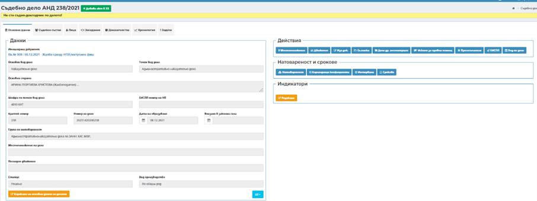
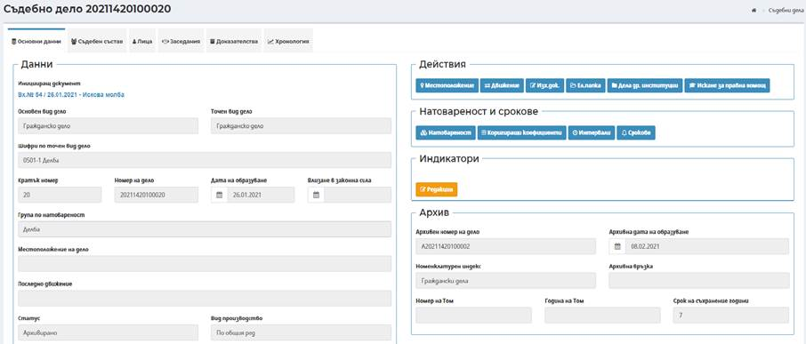

Чрез бутон Преглед в списъка с дела на реда на съответното дело или посредством избор на номер на дело, представляващ хипервръзка, системата препраща към екран за преглед на данни за избраното дело.

В този таб Основни данни се визуализира информация за:
Иницииращ входящ документ – входящ номер и дата и точен вид иницииращ документ. Посредством избор на номер на входящ иницииращ документ, представляващ хипервръзка, системата отваря в нов екран входящия иницииращ документ с възможност за преглед.
Основен вид дело – в зависимост от постъпилия входящия документ за образуване на дело;
Точен вид дело – в зависимост от основен вид дело, определен при образуване на делото;
Основни страни – в полето се извежда информация за първа инициираща и първа ответна страна във вид Име - качество. Ако страните са повече от една след името следва многоточие (...);
Шифри по точен вид дело – предмет на делото, определен при образуване;
ЕИСПП номер по НП – визуализира се само по Наказателни дела;
Кратък номер – 5 цифрения кратък номер;
Номер на дело – 14 цифрения номер на делото (съгласно формат на номер на дело по ПАС);
Дата на образуване – датата на образуване на делото;
Група по натовареност – зависи от шифъра по делото. Ако шифърът се съдържа в повече от една група по натовареност (група по законово основание) е избрана групата, по която да се отчита натовареността;
Местоположение на дело – визуализира се последното регистрирано в системата физическо местоположение на делото;
Статус – статус на делото;
Вид производство - вида на производството в зависимост от начина на разглеждане на делото.
В таб Основни данни за архивирани дела се визуализира допълнителна секция Архив:

Допълнителната секция съдържа следните полета:
Архивен номер на дело – визуализира се генериран от системата архивен номер на делото;
Архивна дата на образуване - визуализира се генерирана от системата архивна дата;
Номенклатурен индекс – визуализира се номенклатурен индекс на делото;
Архивна връзка – визуализира се въведена при архивиране на делото архивна връзка;
Номер на Том – визуализира се номер на том въведен при архивиране на делото;
Година на Том – визуализира се година на том въведена при архивиране на делото;
Срок на съхранение години – визуализира се срок на съхранение на делото определен при архивиране на делото.